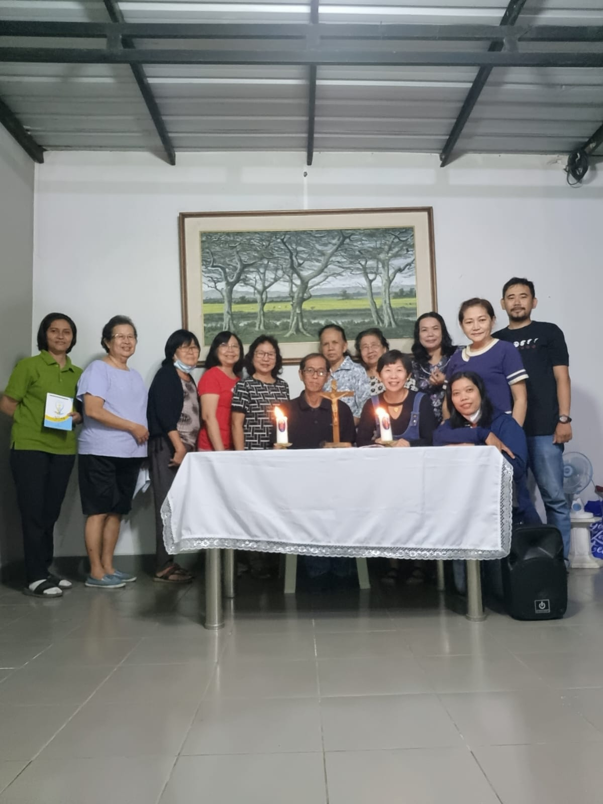
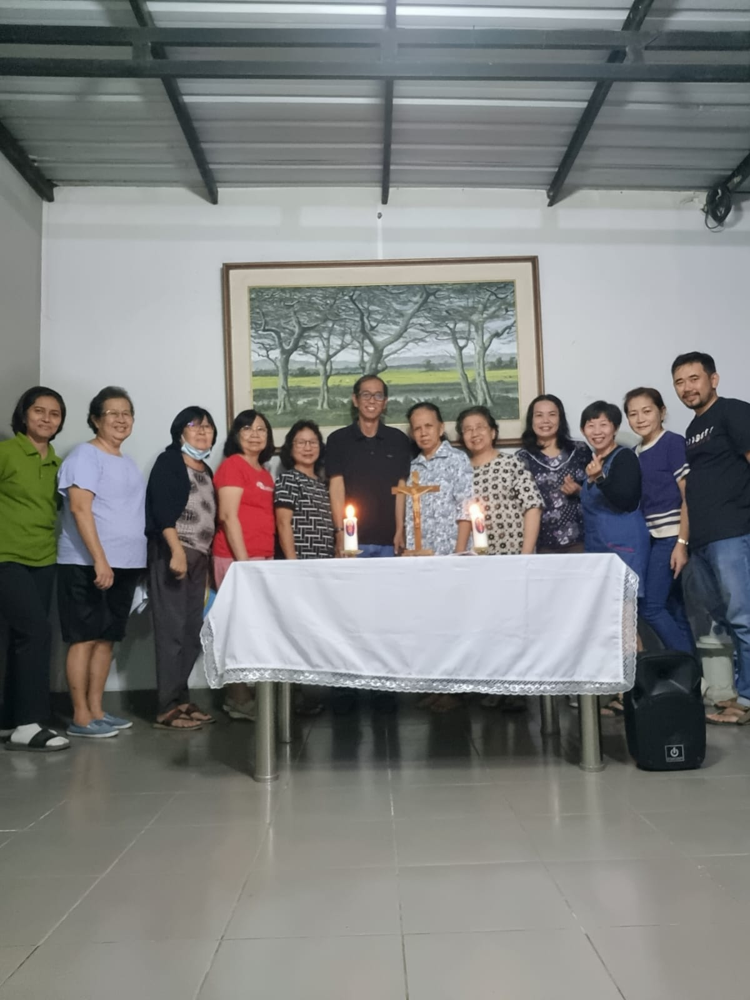
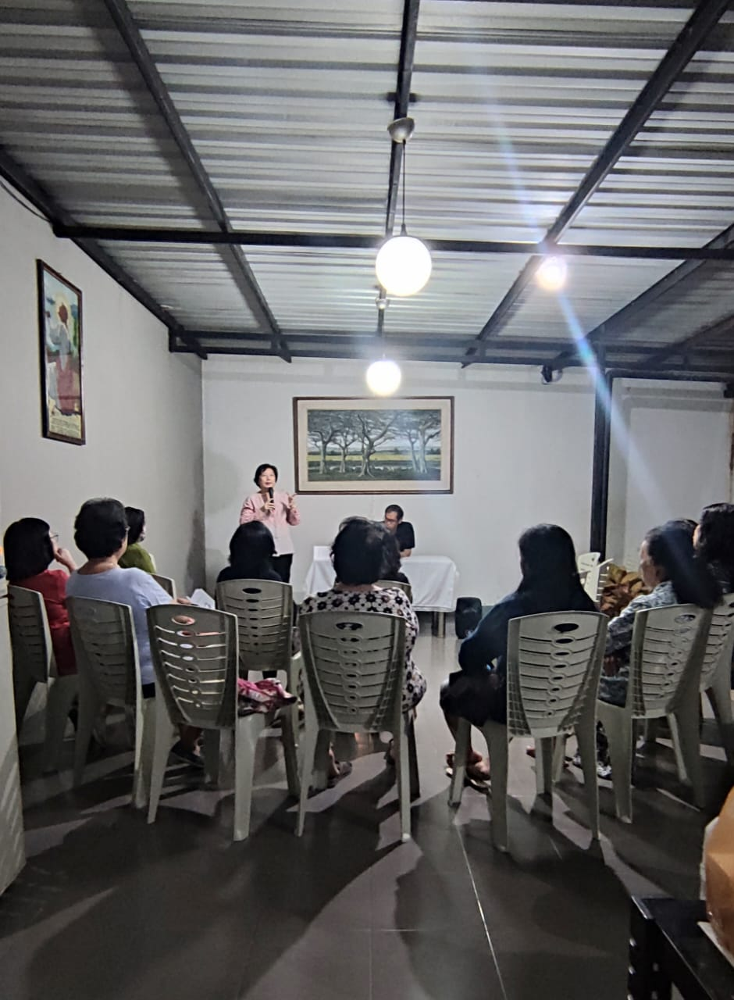
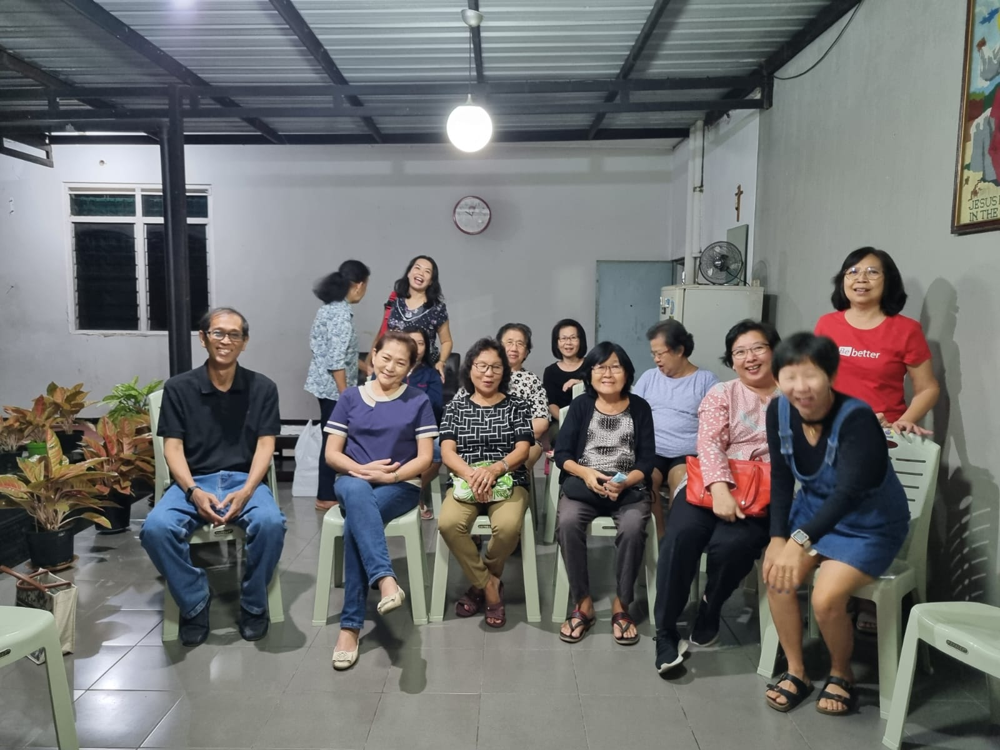
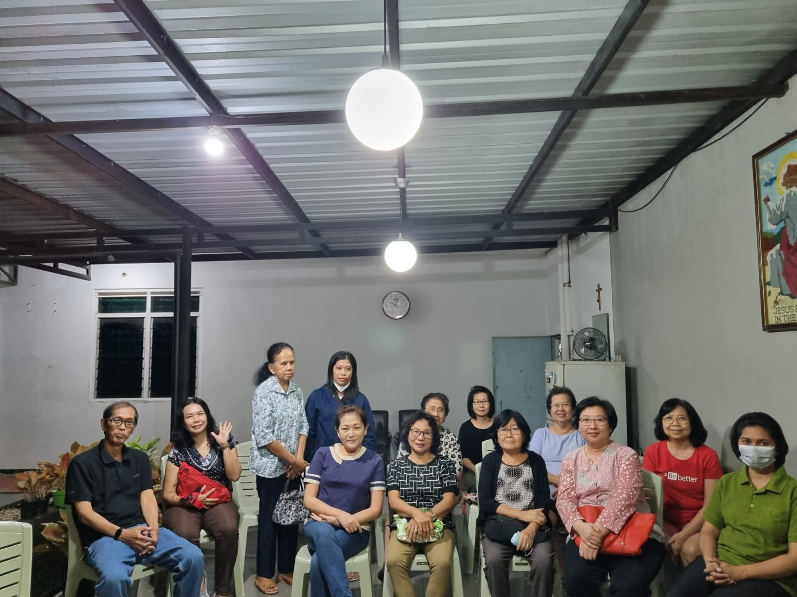
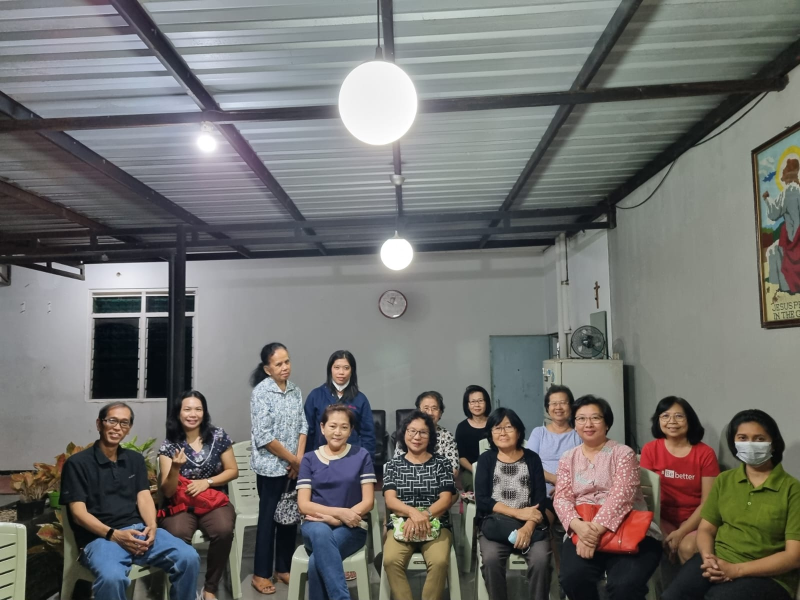
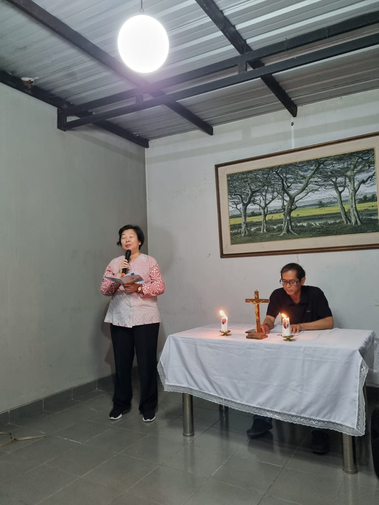

<!DOCTYPE html>
<html xmlns="http://www.w3.org/1999/xhtml" lang="en" xml:lang="en"><head>

<meta charset="utf-8">
<meta name="generator" content="quarto-1.3.353">

<meta name="viewport" content="width=device-width, initial-scale=1.0, user-scalable=yes">

<meta name="author" content="">
<meta name="dcterms.date" content="2023-09-07">

<title>Beranda - Pertemuan BKSN ke 1: Kasih Allah Menggerakkan Evangelisasi Diri</title>
<style>
code{white-space: pre-wrap;}
span.smallcaps{font-variant: small-caps;}
div.columns{display: flex; gap: min(4vw, 1.5em);}
div.column{flex: auto; overflow-x: auto;}
div.hanging-indent{margin-left: 1.5em; text-indent: -1.5em;}
ul.task-list{list-style: none;}
ul.task-list li input[type="checkbox"] {
  width: 0.8em;
  margin: 0 0.8em 0.2em -1em; /* quarto-specific, see https://github.com/quarto-dev/quarto-cli/issues/4556 */ 
  vertical-align: middle;
}
</style>


<script src="../../site_libs/quarto-nav/quarto-nav.js"></script>
<script src="../../site_libs/quarto-nav/headroom.min.js"></script>
<script src="../../site_libs/clipboard/clipboard.min.js"></script>
<script src="../../site_libs/quarto-search/autocomplete.umd.js"></script>
<script src="../../site_libs/quarto-search/fuse.min.js"></script>
<script src="../../site_libs/quarto-search/quarto-search.js"></script>
<meta name="quarto:offset" content="../../">
<script src="../../site_libs/quarto-html/quarto.js"></script>
<script src="../../site_libs/quarto-html/popper.min.js"></script>
<script src="../../site_libs/quarto-html/tippy.umd.min.js"></script>
<script src="../../site_libs/quarto-html/anchor.min.js"></script>
<link href="../../site_libs/quarto-html/tippy.css" rel="stylesheet">
<link href="../../site_libs/quarto-html/quarto-syntax-highlighting-dark.css" rel="stylesheet" id="quarto-text-highlighting-styles">
<script src="../../site_libs/bootstrap/bootstrap.min.js"></script>
<link href="../../site_libs/bootstrap/bootstrap-icons.css" rel="stylesheet">
<link href="../../site_libs/bootstrap/bootstrap.min.css" rel="stylesheet" id="quarto-bootstrap" data-mode="dark">
<script id="quarto-search-options" type="application/json">{
  "location": "navbar",
  "copy-button": false,
  "collapse-after": 3,
  "panel-placement": "end",
  "type": "overlay",
  "limit": 20,
  "language": {
    "search-no-results-text": "No results",
    "search-matching-documents-text": "matching documents",
    "search-copy-link-title": "Copy link to search",
    "search-hide-matches-text": "Hide additional matches",
    "search-more-match-text": "more match in this document",
    "search-more-matches-text": "more matches in this document",
    "search-clear-button-title": "Clear",
    "search-detached-cancel-button-title": "Cancel",
    "search-submit-button-title": "Submit"
  }
}</script>


<link rel="stylesheet" href="../../styles.css">
</head>

<body class="nav-fixed fullcontent">

<div id="quarto-search-results"></div>
  <header id="quarto-header" class="headroom fixed-top">
    <nav class="navbar navbar-expand-lg navbar-dark ">
      <div class="navbar-container container-fluid">
      <div class="navbar-brand-container">
    <a class="navbar-brand" href="../../index.html">
    <span class="navbar-title">Beranda</span>
    </a>
  </div>
            <div id="quarto-search" class="" title="Search"></div>
          <button class="navbar-toggler" type="button" data-bs-toggle="collapse" data-bs-target="#navbarCollapse" aria-controls="navbarCollapse" aria-expanded="false" aria-label="Toggle navigation" onclick="if (window.quartoToggleHeadroom) { window.quartoToggleHeadroom(); }">
  <span class="navbar-toggler-icon"></span>
</button>
          <div class="collapse navbar-collapse" id="navbarCollapse">
            <ul class="navbar-nav navbar-nav-scroll me-auto">
  <li class="nav-item">
    <a class="nav-link" href="../../about.html" rel="" target="">
 <span class="menu-text">Sekilas</span></a>
  </li>  
  <li class="nav-item">
    <a class="nav-link" href="https://instagram.com/lingkungan_st.andreas_pwt?igshid=MzMyNGUyNmU2YQ==" rel="" target=""><i class="bi bi-instagram" role="img">
</i> 
 <span class="menu-text">Instagram</span></a>
  </li>  
</ul>
            <div class="quarto-navbar-tools ms-auto">
</div>
          </div> <!-- /navcollapse -->
      </div> <!-- /container-fluid -->
    </nav>
</header>
<!-- content -->
<div id="quarto-content" class="quarto-container page-columns page-rows-contents page-layout-article page-navbar">
<!-- sidebar -->
<!-- margin-sidebar -->
    
<!-- main -->
<main class="content" id="quarto-document-content">

<header id="title-block-header" class="quarto-title-block default">
<div class="quarto-title">
<h1 class="title">Pertemuan BKSN ke 1: Kasih Allah Menggerakkan Evangelisasi Diri</h1>
  <div class="quarto-categories">
    <div class="quarto-category">bksn</div>
    <div class="quarto-category">pendalaman iman</div>
  </div>
  </div>


<div class="quarto-title-meta">

    
    <div>
    <div class="quarto-title-meta-heading">Published</div>
    <div class="quarto-title-meta-contents">
      <p class="date">September 7, 2023</p>
    </div>
  </div>
  
    
  </div>
  

</header>

<table class="table">
<colgroup>
<col style="width: 50%">
<col style="width: 50%">
</colgroup>
<tbody>
<tr class="odd">
<td><p></p>
<p></p>
<p></p></td>
<td><p></p>
<p></p>
<p></p>
<p></p></td>
</tr>
</tbody>
</table>
<p>Tema besar Bulan Kitab Suci Nasional (BKSN) tahun 2023 adalah <strong>Allah Sumber Kasih dan Keselamatan</strong>. Pasca Pandemi Covid-19, ketika aktivitas dan perjumpaan fisik telah kembali normal, banyak orang tetap mempertahankan kebiasaan hidup selama pandemi, terutama dalam hal pemanfaatan media komunikasi. Kita mengalami apa yang menjadi kekhawatiran Paus Fransiskus dalam Laudato Si’ (Terpujilah Engkau) bagaimana dunia digital “…kadang-kadang justru menghalangi kita untuk kontak langsung dengan kesusahan, kecemasan, dan sukacita orang lain dan kompleksitas pengalaman pribadinya” (No.&nbsp;47).</p>
<p>Pada pertemuan pertama ini, kita diajak untuk melihat ke dalam diri kita pribadi dengan mendalami subtema, <strong>“Kasih Allah Menggerakkan Evangelisasi Diri.”</strong> Berhadapan dengan segala perubahan dan keterpurukan pasca pandemi, kita ditantang untuk masuk dalam pengalaman dan mengakui Allah yang penuh kasih dan pengampunan. Pengalaman perjumpaan dengan Allah inilah yang menggerakkan kita untuk mengevangelisasi diri kita sendiri sehingga pada gilirannya kita siap untuk terlibat dalam rencana penyelamatan Allah.</p>
<p>Teks yang dibaca, didalami, dan direnungkan diambil dari kitab Yunus (Yun. 1:1-17). Perikop ini menggambarkan pergulatan dan pemberontakan Yunus ketika Tuhan mengutusnya pergi ke Niniwe, ibu kota Asyur, untuk mempertobatkan penduduknya. Alih-alih pergi ke Niniwe, Yunus berusaha lari dari Tuhan ke arah sebaliknya, yaitu ke kota Tarsis. Akan tetapi, Tuhan Sang empunya langit tetap mencari Yunus untuk dijadikan alat kasih-Nya. Melalui pengalaman menjauh dari Allah, Yunus ditantang untuk taat pada rencana kasih Allah. Pada akhirnya, kasih Allah inilah yang mendorong Yunus untuk mengakui Tuhan di tengah-tengah bangsa asing sebagai bentuk dari penginjilan terhadap dirinya sendiri.</p>
<p><strong>Inspirasi Yun. 1:1-17</strong></p>
<p><strong>1:1</strong> Datanglah firman TUHAN kepada Yunus bin Amitai,<br>
<strong>1:2</strong> “Pergilah segera ke Niniwe, kota yang besar itu, serukanlah peringatan terhadap mereka, karena kejahatannya telah sampai kepada-Ku.”<br>
<strong>1:3</strong> Tetapi, Yunus bersiap untuk melarikan diri ke Tarsis, jauh dari hadapan TUHAN. Ia pergi ke Yafo dan mendapati di sana sebuah kapal, yang akan berangkat ke Tarsis. Ia membayar biaya perjalanannya, lalu naik kapal itu untuk berlayar bersama mereka ke Tarsis, jauh dari hadapan TUHAN.<br>
<strong>1:4</strong> Namun, TUHAN menurunkan angin ribut ke laut, lalu terjadilah badai besar, sehingga kapal itu hampir saja hancur.<br>
<strong>1:5</strong> Awak kapal ketakutan, masing masing berteriak-teriak kepada ilahnya. Mereka membuang ke dalam laut segala muatan kapal itu untuk meringankannya. Sementara itu, Yunus telah turun ke bagian kapal yang paling bawah, berbaring di situ, dan tertidur nyenyak.<br>
<strong>1:6</strong> Datanglah nakhoda menemuinya dan berkata: “Bagaimana mungkin engkau tidur begitu nyenyak? Bangunlah, berserulah kepada Allahmu, barangkali Allah itu akan memperhatikan kita, sehingga kita tidak binasa.”<br>
<strong>1:7</strong> Kemudian mereka berkata satu sama lain, “Marilah kita membuang undi, supaya kita mengetahui, karena siapa malapetaka ini menimpa kita.” Mereka pun membuang undi dan undi itu jatuh pada Yunus.<br>
<strong>1:8</strong> Kata mereka kepadanya,“Beritahukanlah kepada kami, karena siapa malapetaka ini menimpa kita. Apa pekerjaanmu dan dari mana asalmu? Apa negerimu dan dari bangsa mana engkau?”<br>
<strong>1:9</strong> Sahutnya kepada mereka, “Aku orang Ibrani; aku takut akan TUHAN, Allah Semesta Langit, yang menjadikan lautan dan daratan.”<br>
<strong>1:10</strong> Orang-orang itu sangat ketakutan dan berkata kepadanya, “Apa yang telah kaulakukan?” Orang-orang itu mengetahui bahwa ia melarikan diri, jauh dari hadapan TUHAN, sebab hal itu telah diberitahukannya kepada mereka.<br>
<strong>1:11</strong> Mereka bertanya, Apa yang harus kami lakukan padamu, supaya laut mereda terhadap kami?“<br>
<strong>1:12</strong> Sahutnya kepada mereka,”Angkatlah aku campakkan aku ke dalam laut supaya laut mereda dan tidak menyerang kamu lagi. Sebab aku tahu bahwa karena akulah badai besar ini menyerang kamu.”<br>
<strong>1:13</strong> Orang-orang itu justru mendayung untuk membawa kapal itu kembali ke darat, tetapi mereka tidak sanggup, sebab laut semakin bergelora menyerang mereka.<br>
<strong>1:14</strong> Mereka berseru kepada TUHAN, katanya, “Ya TUHAN, janganlah kiranya Engkau biarkan kami binasa karena nyawa orang ini. Janganlah Engkau tanggungkan kepada kami darah orang yang tidak bersalah, sebab Engkau, TUHAN, telah berbuat seperti yang Kaukehendaki.”<br>
<strong>1:15</strong> Kemudian mereka mengangkat Yunus, dan mencampakkannya ke dalam laut. Laut pun berhenti mengamuk. <strong>1:16</strong> Orang-orang itu menjadi sangat takut kepada TUHAN, lalu mempersembahkan kurban sembelihan kepada TUHAN serta mengikrarkan nazar.<br>
<strong>1:17</strong> Atas penentuan TUHAN datanglah seekor ikan besar untuk menelan Yunus. Yunus pun tinggal di dalam perut ikan itu selama tiga hari tiga malam.</p>
<p><strong>Pendalaman Teks</strong></p>
<ul>
<li>Pada bagian awal perikop, Yunus digambarkan sebagai seorang yang menerima firman Tuhan. “Datanglah firman Tuhan kepada Yunus” (Yun. 1:1). Penerimaan firman ini menjadi tanda nyata bahwa Yunus adalah seorang nabi.</li>
<li>Tuhan menugaskan Nabi Yunus ke kota Niniwe, kota yang menjadi musuh dari bangsanya sendiri. Dia diminta untuk menyerukan pertobatan karena mereka sudah banyak berbuat jahat dan dosa di mata Allah. Kita bisa sejajarkan tugas yang diberikan kepada Yunus dengan seorang yang diminta untuk mengajak orang yang memusuhi dan ja￾hat sama kita untuk bertobat agar hubungan menjadi baik kembali.</li>
<li>Yunus melarikan diri karena cara pandang dan perlakuannya kepada orang-orang Niniwe berbeda dan bertentangan dengan cara pandang dan perlakuan Allah. Menurut Yunus, orang-orang Niniwe yang dikenal sebagai penindas, perampok, dan penjahat yang harus dihukum berat supaya ada keadilan. Namun, menurut Tuhan Allah yang pengasih dan penyayang, mereka harus diampuni dan diselamatkan. Mereka tidak boleh dihukum begitu saja, tetapi harus diwartakan pertobatan terlebih dahulu. Perbedaan cara pandang dan perlakuan inilah yang membuat Yunus menolak perintah Allah dan mengambil arah yang berseberangan untuk menjauh diri dari Tuhan.</li>
<li>Para awak kapal ketakutan dan berseru kepada ilah masing-masing. Mereka juga berusaha menyelamatkan kapal dengan cara membuang isi muatannya dan berusaha membawa kapal kembali ke darat. Sebaliknya, Yunus mencari ketenangan dan kenyamanan dengan ti￾dur nyenyak di bagian paling bawah kapal. Dia tidak peduli dengan situasi yang menerpa, apalagi berdoa untuk memohon keselamatan kepada Tuhan.</li>
<li>Para awak kapal membuang undi untuk mengetahui siapa yang menjadi penyebab terjadi malapetaka. Membuang undi bagi orang Israel dimaksudkan untuk mengenal petunjuk dari Tuhan. Namun, di sini nakhoda dan para awak kapal yang melakukannya untuk meminta petunjuk Tuhan. Undian jatuh kepada Yunus, yang berarti bahwa dialah yang bersalah dan berdosa sehingga terjadi malapetaka. Dia lalu mengakui dirinya sebagai penyebab terjadi badai karena melarikan diri atau menjauhkan diri dari hadapan TUHAN. Dia melarikan diri dari tugasnya untuk mewartakan pertobatan kepada orang-orang Niniwe yang menjadi musuh bangsanya dan yang melakukan banyak kesalahan dan dosa.</li>
<li>Para awak kapal harus membuang Yunus ke laut sesuai permintaannya. Setelah Yunus dibuang, angin reda dan laut tenang. Nampaknya, supaya angin reda dan laut tenang serta kapal bisa berlayar sampai tujuan, mereka harus membuang ‘sumber dosa’ yang ada di kapal. Demikian juga hidup bisa berjalan dengan baik sesuai dengan kehendak Allah jika kita membuang sumber dosa dalam diri kita.</li>
</ul>
<p><strong>Sharing dan Aksi Nyata</strong></p>
<p>Setelah penjelasan teks, peserta diajak untuk mensharingkan pengalaman pribadi mereka dan membangun aksi nyata dengan bantuan beberapa pertanyaan :</p>
<ul>
<li>Bertolak dari pengalaman awak kapal yang terombang-ambing di tengah laut dan berseru-seru kepada ilah mereka, apakah saya juga ingat akan Allah dan berseru kepada-Nya ketika dihadapkan pada badai kehidupan?</li>
<li>Setelah Yunus yang dianggap menjadi penyebab badai dibuang ke laut, badai menjadi reda. Dapatkah saya menemukan ‘sumbersumber dosa’ yang menjadi penyebab badai dalam diri, keluarga, masyarakat, atau bangsa saya? Beranikah saya membuangnya?</li>
<li>Apakah saya lebih suka mencari kenyamanan dengan memilih diam dan bersembunyi daripada terlibat dan berjuang untuk mengatasi badai di tengah keluarga, lingkungan, dan masyarakat?</li>
<li>Apakah saya mampu mengevangelisasi diri sendiri sehingga pada gilirannya saya siap untuk terlibat dalam rencana penyelamatan Allah di kehidupan sehari-hari?</li>
</ul>
<p><em>Materi tulisan dari buku pendalaman BKSN 2023 yang disusun oleh tim Lembaga Biblika Indonesia.</em></p>
<hr>


</main> <!-- /main -->
<script id="quarto-html-after-body" type="application/javascript">
window.document.addEventListener("DOMContentLoaded", function (event) {
  const toggleBodyColorMode = (bsSheetEl) => {
    const mode = bsSheetEl.getAttribute("data-mode");
    const bodyEl = window.document.querySelector("body");
    if (mode === "dark") {
      bodyEl.classList.add("quarto-dark");
      bodyEl.classList.remove("quarto-light");
    } else {
      bodyEl.classList.add("quarto-light");
      bodyEl.classList.remove("quarto-dark");
    }
  }
  const toggleBodyColorPrimary = () => {
    const bsSheetEl = window.document.querySelector("link#quarto-bootstrap");
    if (bsSheetEl) {
      toggleBodyColorMode(bsSheetEl);
    }
  }
  toggleBodyColorPrimary();  
  const icon = "";
  const anchorJS = new window.AnchorJS();
  anchorJS.options = {
    placement: 'right',
    icon: icon
  };
  anchorJS.add('.anchored');
  const isCodeAnnotation = (el) => {
    for (const clz of el.classList) {
      if (clz.startsWith('code-annotation-')) {                     
        return true;
      }
    }
    return false;
  }
  const clipboard = new window.ClipboardJS('.code-copy-button', {
    text: function(trigger) {
      const codeEl = trigger.previousElementSibling.cloneNode(true);
      for (const childEl of codeEl.children) {
        if (isCodeAnnotation(childEl)) {
          childEl.remove();
        }
      }
      return codeEl.innerText;
    }
  });
  clipboard.on('success', function(e) {
    // button target
    const button = e.trigger;
    // don't keep focus
    button.blur();
    // flash "checked"
    button.classList.add('code-copy-button-checked');
    var currentTitle = button.getAttribute("title");
    button.setAttribute("title", "Copied!");
    let tooltip;
    if (window.bootstrap) {
      button.setAttribute("data-bs-toggle", "tooltip");
      button.setAttribute("data-bs-placement", "left");
      button.setAttribute("data-bs-title", "Copied!");
      tooltip = new bootstrap.Tooltip(button, 
        { trigger: "manual", 
          customClass: "code-copy-button-tooltip",
          offset: [0, -8]});
      tooltip.show();    
    }
    setTimeout(function() {
      if (tooltip) {
        tooltip.hide();
        button.removeAttribute("data-bs-title");
        button.removeAttribute("data-bs-toggle");
        button.removeAttribute("data-bs-placement");
      }
      button.setAttribute("title", currentTitle);
      button.classList.remove('code-copy-button-checked');
    }, 1000);
    // clear code selection
    e.clearSelection();
  });
  function tippyHover(el, contentFn) {
    const config = {
      allowHTML: true,
      content: contentFn,
      maxWidth: 500,
      delay: 100,
      arrow: false,
      appendTo: function(el) {
          return el.parentElement;
      },
      interactive: true,
      interactiveBorder: 10,
      theme: 'quarto',
      placement: 'bottom-start'
    };
    window.tippy(el, config); 
  }
  const noterefs = window.document.querySelectorAll('a[role="doc-noteref"]');
  for (var i=0; i<noterefs.length; i++) {
    const ref = noterefs[i];
    tippyHover(ref, function() {
      // use id or data attribute instead here
      let href = ref.getAttribute('data-footnote-href') || ref.getAttribute('href');
      try { href = new URL(href).hash; } catch {}
      const id = href.replace(/^#\/?/, "");
      const note = window.document.getElementById(id);
      return note.innerHTML;
    });
  }
      let selectedAnnoteEl;
      const selectorForAnnotation = ( cell, annotation) => {
        let cellAttr = 'data-code-cell="' + cell + '"';
        let lineAttr = 'data-code-annotation="' +  annotation + '"';
        const selector = 'span[' + cellAttr + '][' + lineAttr + ']';
        return selector;
      }
      const selectCodeLines = (annoteEl) => {
        const doc = window.document;
        const targetCell = annoteEl.getAttribute("data-target-cell");
        const targetAnnotation = annoteEl.getAttribute("data-target-annotation");
        const annoteSpan = window.document.querySelector(selectorForAnnotation(targetCell, targetAnnotation));
        const lines = annoteSpan.getAttribute("data-code-lines").split(",");
        const lineIds = lines.map((line) => {
          return targetCell + "-" + line;
        })
        let top = null;
        let height = null;
        let parent = null;
        if (lineIds.length > 0) {
            //compute the position of the single el (top and bottom and make a div)
            const el = window.document.getElementById(lineIds[0]);
            top = el.offsetTop;
            height = el.offsetHeight;
            parent = el.parentElement.parentElement;
          if (lineIds.length > 1) {
            const lastEl = window.document.getElementById(lineIds[lineIds.length - 1]);
            const bottom = lastEl.offsetTop + lastEl.offsetHeight;
            height = bottom - top;
          }
          if (top !== null && height !== null && parent !== null) {
            // cook up a div (if necessary) and position it 
            let div = window.document.getElementById("code-annotation-line-highlight");
            if (div === null) {
              div = window.document.createElement("div");
              div.setAttribute("id", "code-annotation-line-highlight");
              div.style.position = 'absolute';
              parent.appendChild(div);
            }
            div.style.top = top - 2 + "px";
            div.style.height = height + 4 + "px";
            let gutterDiv = window.document.getElementById("code-annotation-line-highlight-gutter");
            if (gutterDiv === null) {
              gutterDiv = window.document.createElement("div");
              gutterDiv.setAttribute("id", "code-annotation-line-highlight-gutter");
              gutterDiv.style.position = 'absolute';
              const codeCell = window.document.getElementById(targetCell);
              const gutter = codeCell.querySelector('.code-annotation-gutter');
              gutter.appendChild(gutterDiv);
            }
            gutterDiv.style.top = top - 2 + "px";
            gutterDiv.style.height = height + 4 + "px";
          }
          selectedAnnoteEl = annoteEl;
        }
      };
      const unselectCodeLines = () => {
        const elementsIds = ["code-annotation-line-highlight", "code-annotation-line-highlight-gutter"];
        elementsIds.forEach((elId) => {
          const div = window.document.getElementById(elId);
          if (div) {
            div.remove();
          }
        });
        selectedAnnoteEl = undefined;
      };
      // Attach click handler to the DT
      const annoteDls = window.document.querySelectorAll('dt[data-target-cell]');
      for (const annoteDlNode of annoteDls) {
        annoteDlNode.addEventListener('click', (event) => {
          const clickedEl = event.target;
          if (clickedEl !== selectedAnnoteEl) {
            unselectCodeLines();
            const activeEl = window.document.querySelector('dt[data-target-cell].code-annotation-active');
            if (activeEl) {
              activeEl.classList.remove('code-annotation-active');
            }
            selectCodeLines(clickedEl);
            clickedEl.classList.add('code-annotation-active');
          } else {
            // Unselect the line
            unselectCodeLines();
            clickedEl.classList.remove('code-annotation-active');
          }
        });
      }
  const findCites = (el) => {
    const parentEl = el.parentElement;
    if (parentEl) {
      const cites = parentEl.dataset.cites;
      if (cites) {
        return {
          el,
          cites: cites.split(' ')
        };
      } else {
        return findCites(el.parentElement)
      }
    } else {
      return undefined;
    }
  };
  var bibliorefs = window.document.querySelectorAll('a[role="doc-biblioref"]');
  for (var i=0; i<bibliorefs.length; i++) {
    const ref = bibliorefs[i];
    const citeInfo = findCites(ref);
    if (citeInfo) {
      tippyHover(citeInfo.el, function() {
        var popup = window.document.createElement('div');
        citeInfo.cites.forEach(function(cite) {
          var citeDiv = window.document.createElement('div');
          citeDiv.classList.add('hanging-indent');
          citeDiv.classList.add('csl-entry');
          var biblioDiv = window.document.getElementById('ref-' + cite);
          if (biblioDiv) {
            citeDiv.innerHTML = biblioDiv.innerHTML;
          }
          popup.appendChild(citeDiv);
        });
        return popup.innerHTML;
      });
    }
  }
});
</script>
</div> <!-- /content -->


</body></html>